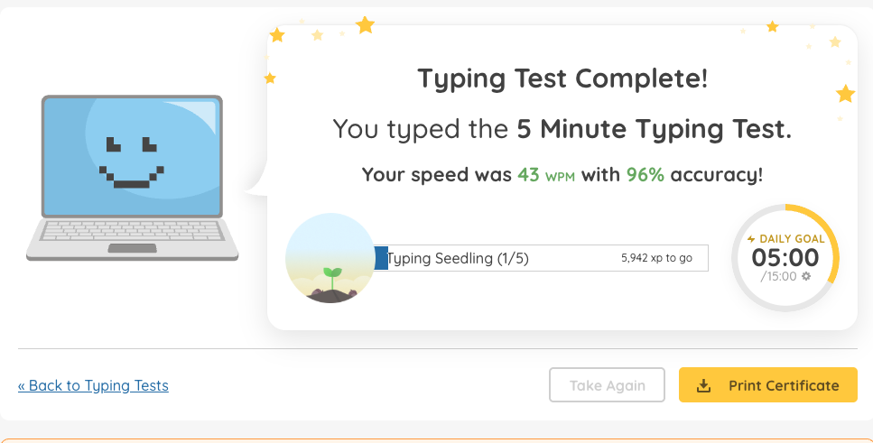
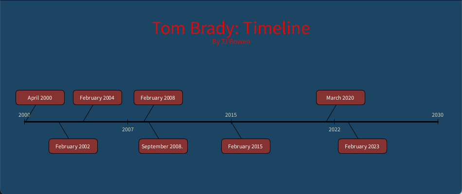
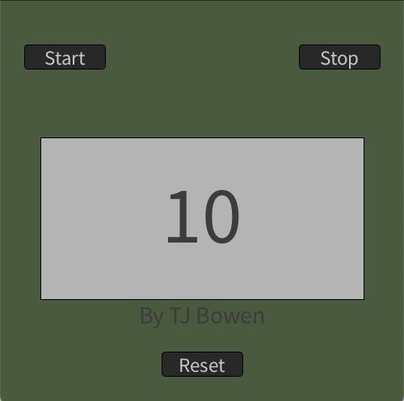
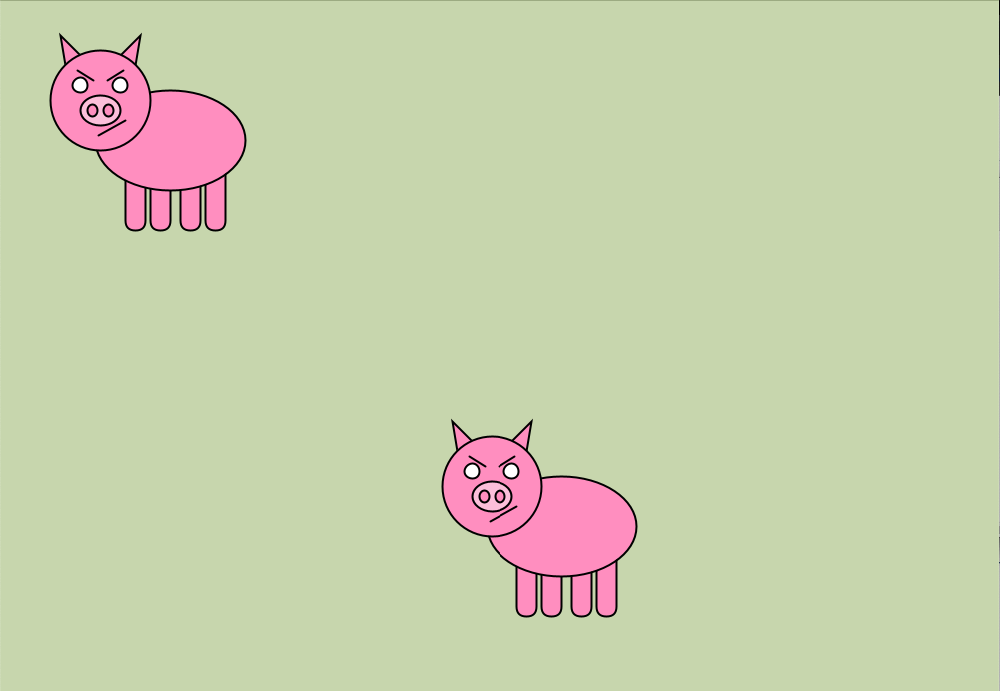
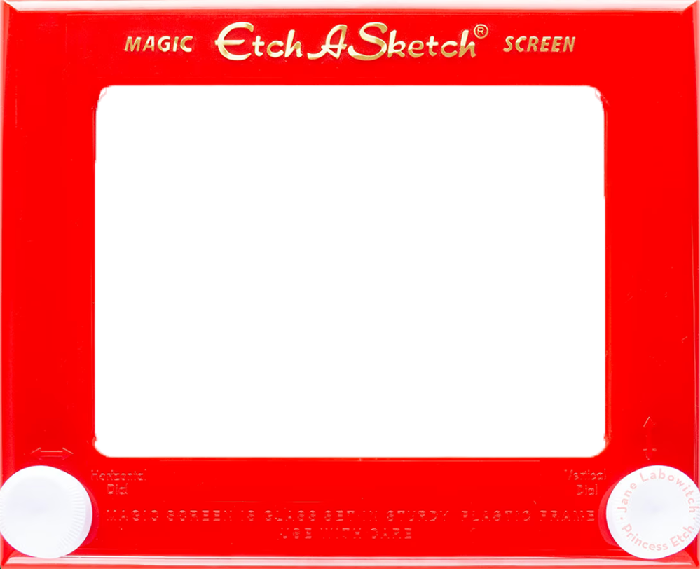
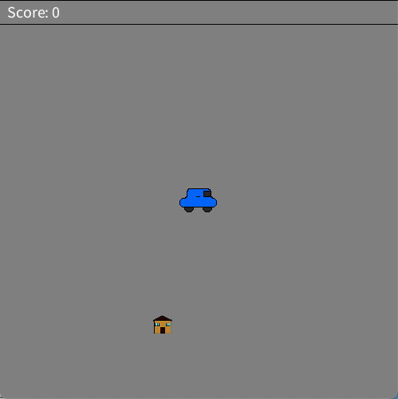
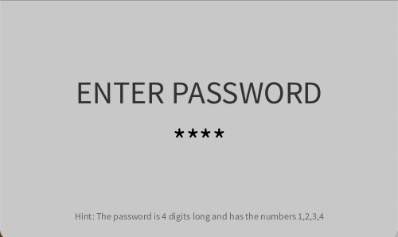

Typing Results

Coding Project
Timeline

Download My PDE fileThis timeline shows Tom Brady’s journey from an NFL rookie to the most decorated quarterback of all time. It follows his NFL days bring his teams to the Super bowl multiple times
Timer

Download My PDE fileIn this assignment I made a stopwatch that has the abilty to count down from 10 seconds, reset the tiem, and stop the stop wacth.
Creature

Download My PDE fileFor this assignment, I made a pig drawing that follows your cursor whereever you move it.
Etch-a-Sketch

Download My PDE fileThis Etch-a-Sketch assignment is similar to the one in real life, using the arrow keys, you can draw whatever you want on the Etch-a-Sketch. Clicking space will clear your work.
ShapeGame

Download My PDE fileThe shape game is played by either using ASWD or the arrow keys. When you start you have to drive the car to the house before it dissapears of the screen. I made it so you get get more or less points based on how fast you get there.
MiniProdject: Password

Download My PDE fileIn this assignment, I made a login screen where you have to enter a password in order to get it correct. The password is 4 digits long and there is a hint on the assignment to figure it out.